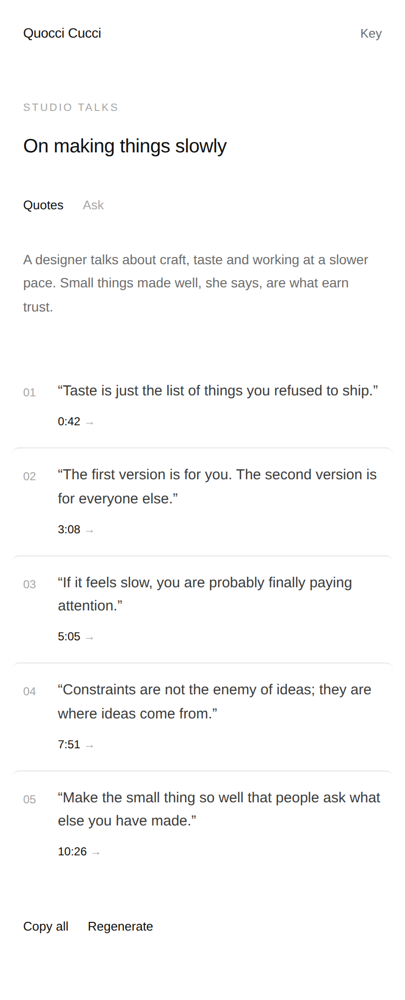
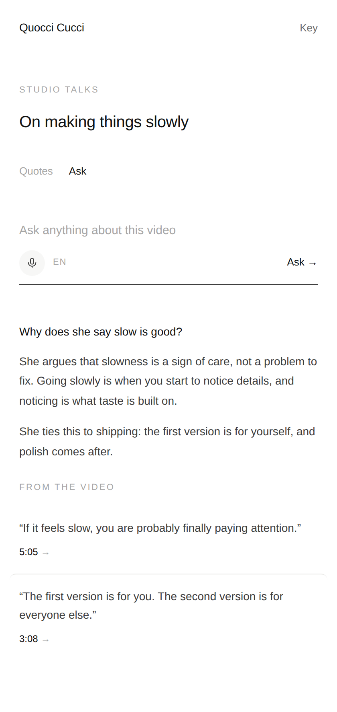

Quocci Cucci
For videos too long to watch but too good to skip. Quocci Cucci reads a YouTube video's transcript and gives you its best lines, each with a timestamp. Click a quote and the video jumps right to it.

Open a video
Click the fig and a side panel opens next to the video. Nothing covers what you're watching.
Pick how many
5, 10, 20 or any number you type. Claude picks lines word for word from the transcript, spread across the whole video.
Jump to the moment
Every quote has a timestamp matched to the exact caption. Click it and the video plays from there.
Ask the video
Type or say a question. The answer comes from what's said in the video, with quotes you can click to hear it yourself.
English or 中文
Ask in either language, by typing or out loud. Quotes stay in the language the video is spoken in.
Stays yours
Your own Anthropic key, kept in your browser. Only the transcript goes to Claude, and nothing is sent anywhere else.

- Download Quocci Cucci and unzip it.
- Open
chrome://extensionsand switch on Developer mode. - Click Load unpacked and choose the
quocci-cuccifolder. - Pin Quocci Cucci, open a YouTube video and click it. Paste your Anthropic API key the first time.
- Press Get quotes, or switch to Ask and ask away.
Works in Chrome on desktop, on any video with captions (auto-generated ones are fine). Results are saved per video, so they're there when you come back.